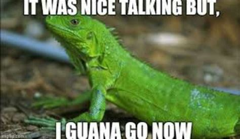

Memes


A iguana (Iguana iguana) é um réptil pertencente à Ordem Squamata, Família Iguanidae e Gênero Iguana.
A iguana (Iguana iguana), também conhecida como iguana verde, apresenta uma coloração que varia entre verde e marrom e pode medir cerca de um metro e 80 centímetros de comprimento. Apresenta hábitos arborícolas e é um animal herbívoro.
Apresentam hábito diurno e arborícola, sendo encontradas em regiões próximas a corpos d'água. Assim como os demais répteis, as iguanas necessitam do Sol e da sombra para sua termorregulação, encontrando nas árvores um ambiente propício. Além disso, as iguanas necessitam dos raios ultravioleta (UV) para o metabolismo do cálcio e da vitamina D.
As iguanas apresentam um corpo verde-claro, em indivíduos jovens, e que vai escurecendo-se à medida que se tornam adultas, adquirindo um tom marrom-acinzentado, podendo apresentar também listras escuras verticais. Podem chegar a um metro e 80 centímetros de comprimento, sendo que sua cauda chega a ter dois terços de seu comprimento, e pesar cerca de seis quilos.
As iguanas apresentam também algumas características bem peculiares, como uma crista, que segue pelo dorso e cauda, semelhante a espinhos, uma prega de pele bastante desenvolvida na região gular e uma grande escama arredondada abaixo do tímpano.
Possuem um “olho parietal” que deteta luz. Embora mais simples, a forma geral do “terceiro olho” é similar à dos olhos laterais. Coberto por pele, é provável que não forme imagens, mas é neurologicamente funcional e desempenha um importante papel na sobrevivência dos lagartos que o possuem, nomeadamente a iguana. Deteta a presença de luz solar e sombra e mede a temperatura. Ajuda a indicar se as condições ambientais estão ou não adequadas à atividade do momento. Influencia, por exemplo no tempo de exposição à luz do sol e na defesa de predadores aéreos.
Os machos têm uma crista e um papo mais desenvolvido. A sua cauda é mais gorda do que a da fêmea, e a cabeça é maior. As tiras escuras que aparecem na pele quando adultos são mais intensas do que nas fêmeas.
Quando jovens, os iguanas geralmente possuem coloração verde intensa, e conforme vão se tornando adultos começam a apresentar listras escuras ao longo do corpo.
A iguana é um animal herbívoro, apresentando preferências alimentares nem sempre relacionadas às espécies mais disponíveis para a sua alimentação. Esses animais podem ser observados ingerindo restos de animais mortos e até mesmo fezes de membros da mesma espécie, no entanto, isso pode estar relacionado à manutenção de sua fauna microbiana, o que auxilia na digestão da matéria vegetal, seu principal alimento. A ingestão de pequenos animais, como insetos, pode ocorrer de forma não intencional.
A maturidade sexual das iguanas ocorre entre dois e três anos de idade. O ciclo reprodutivo dessa espécie está relacionado às estações chuvosa e seca. Geralmente os machos estabelecem territórios para a reprodução no início da estação seca e as fêmeas fazem a postura em meados dessa mesma estação. Isso ocorre para que os ovos possam eclodir próximo ao início da estação chuvosa, quando as folhas são novas e de fácil digestão para os filhotes recém-nascidos.
A quantidade de ovos depositados pelas fêmeas varia conforme o tamanho corporal, no entanto, essa quantidade é, em média, de 35 ovos, e eles levam de 10 a 15 semanas até serem chocados. Nesse período, as fêmeas protegem seus ninhos de outras fêmeas. Grande parte dos filhotes morre antes de chegarem à vida adulta. Os jovens são predados, por exemplo, por jacarés e peixes quando nadam para longe dos ninhos.
A International Iguana Foundation trabalha em parceria com uma ampla variedade de organizações para conscientizar o público sobre as ameaças enfrentadas pelas iguanas hoje e o importante papel que as iguanas desempenham na manutenção de ecossistemas saudáveis.
Trabalham para restaurar essas espécies emblemáticas e seus habitats e fornecer suporte crítico aos programas de recuperação de iguanas. Como organização sem fins lucrativos, fornecem subsídios para apoiar a conservação de iguanas ameaçadas em todo o mundo.